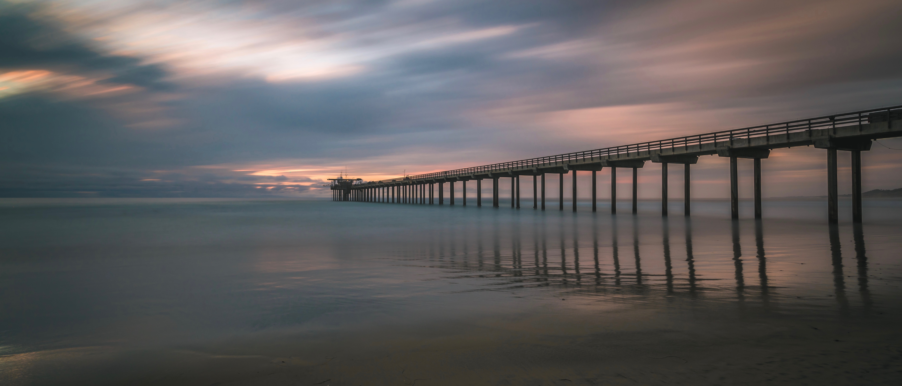

"The town was paper, but the memories were not."
- John Green
- John Green
Micro-Videos
10-second snippets migrated from WeChat Moments.
2019
- Airing in Forza Horizon 4 Winter, June 25, 2019 Video
- 24 Bday, “new beginning ahh”, “Nights” by Frank Ocean, May 20, 2019 Video
- Dansong oolong tea party with the boss, MIT Sloan, April 11, 2019 Video
- Lift in the mist, dream-like ambience, “You are love” by Frank Ocean, Killington, April 10, 2019 Video
- First time in park terrain., March 16, 2019 Video
- No work, no snow, so what?, “Voodoo” by Frank Ocean, March 11, 2019 Video
- Just breeeeze!, “Lonely God” by Wangwen, March 10, 2019 Video
- Total 60 hours snowboarding!, “Don’t look now” by Far East Movement, March 2, 2019 Video
- Formation in trail carrier at Killington, “3005” by Donald Glover, February 24, 2019 Video
- 45‚Äô’ powder snow at Sunday River, “Beach is better” by Jay Z, February 17, 2019 Video
- Lunar new year in New York, February 4, 2019 Video
2018
- First time snowboarding!, “Bound 2” by Kanye West, December 29, 2018 Video
- The last tennis lesson with Alex, “Misubishi Sony” by Frank Ocean, December 17, 2018 Video
- “We’re graduated!”, “Shoes” by IU, December 15, 2018 Video
- “Infatuation is your rush.”, “Rushes” by Frank Ocean, Banff, Alberta, Canada, December 10, 2018 Video
- “To slow down the time.”, “Woods” by Bon Iver, Banff, Alberta, Canada, December 08, 2018 Video
- My everyday in the red line, “Deathwish” by Frank Ocean, October 01, 2018 Video
- Must do before sleep!, “In Here Somewhere” by Frank Ocean, September 13, 2018 Video
- Independence Day Fireworks 2018, chorus in “Falling Into Me” by Let’s Eat Grandma, July 4, 2018 Video
- Beach, sea shells, cold sea water, and warm sunshine, chorus in “3005” by Donald Glover, May 29, 2018 Video
- Crossing the Arctic on HU781, chorus in “Vowals = space + time” by Grimes, April 4, 2018 Video
2017
- Snowy night, silent miss, Stevie Wonder’s Harmonica Solo in “Doing It Wrong”, December 9, 2017 Video
- Views from the Charles River Esplanade in the dawn, The Weeknd’s vocal solo in “Crew Love”, November 26, 2017 Video
- Roast duck and Snakehead in May Flower, and symphony track in “Touch” by Daft Punk, October 30, 2017 Video
- Stadium after raining, cold, humid and fresh air, “Horizon” by Daft Punk, Henry Stadium, MIT, October 29, 2017 Video
- Ending of “Preach” by Drake, October 28, 2017 Video
- Peaceful thoughts after a 5-mile running, intro of “Pink Matter” by Frank Ocean, September 26, 2017 Video
- Track Video for chorus of “Pilot Jones” by Frank Ocean, September 22, 2017 Video
- Electric Guitar solo by John Mayer at the ending of “Pyramids” by Frank Ocean, September 21, 2017 Video
- “744 flying over like a boat floatin’” Bridge in “Self Control” by Frank Ocean, August 29, 2017 Video
- “Don’t forget to go outside!” Memorial Drive, and “Sleep Walker” by Joni Fatora, August 26, 2017 Video
- Part II of “Summer Life”, cello solo in Poetic Finale, August 21, 2017, Charles River Esplanade Video
- “Summer Life at MIT”, Poetic Finale, August 20, 2017, Warehouse and Ashdown. Video
- “Hello, East Coast”, June 24, 2017, Boston Logan International Airport. Video